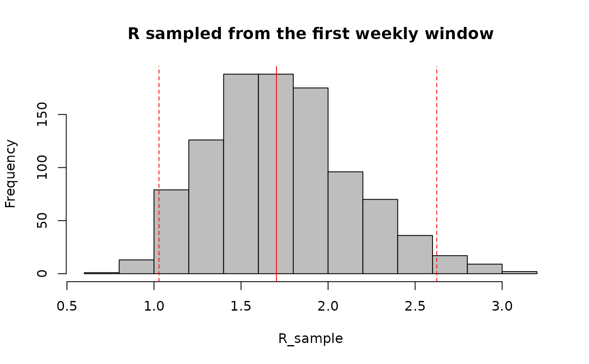

sample from the posterior R distribution
sample_posterior_R(R, n = 1000, window = 1L)an estimate_R object from the estimate_r function
function.
an integer specifying the number of samples to be taken from the gamma distribution.
an integer (or sequence of integers) specifying the window(s) from which to estimate R. Defaults to the first window. If multiple windows are specified, the resulting samples will be drawn from several distributions.
n values of R from the posterior R distribution
## load data on pandemic flu in a school in 2009
data("Flu2009")
## estimate the reproduction number (method "non_parametric_si")
## when not specifying t_start and t_end in config, they are set to estimate
## the reproduction number on sliding weekly windows
res <- estimate_R(incid = Flu2009$incidence,
method = "non_parametric_si",
config = make_config(list(si_distr = Flu2009$si_distr)))
#> Default config will estimate R on weekly sliding windows.
#> To change this change the t_start and t_end arguments.
## Sample R from the first weekly window
win <- 1L
R_median <- res$R$`Median(R)`[win]
R_CrI <- c(res$R$`Quantile.0.025(R)`[win], res$R$`Quantile.0.975(R)`[win])
set.seed(2019-06-06) # fixing the random seed for reproducibility
R_sample <- sample_posterior_R(res, n = 1000, window = win)
hist(R_sample, col = "grey", main = "R sampled from the first weekly window")
abline(v = R_median, col = "red") # show the median estimated R
abline(v = R_CrI, col = "red", lty = 2) # show the 95%CrI of R
